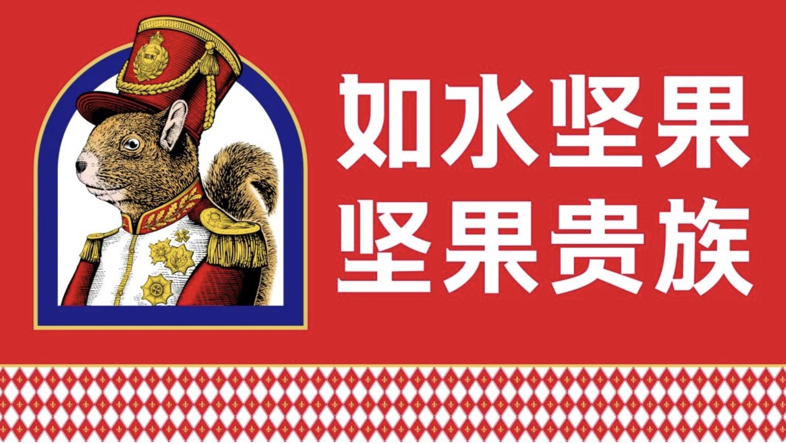
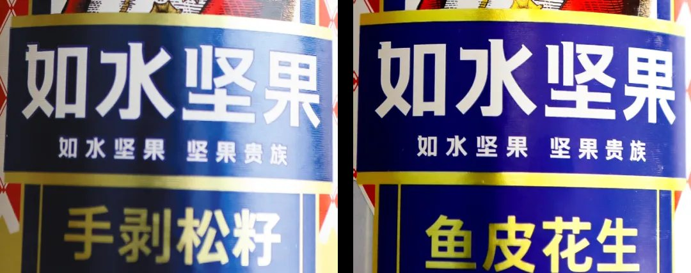
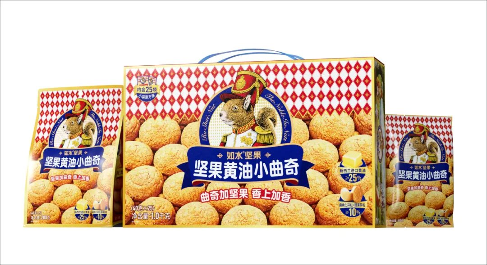
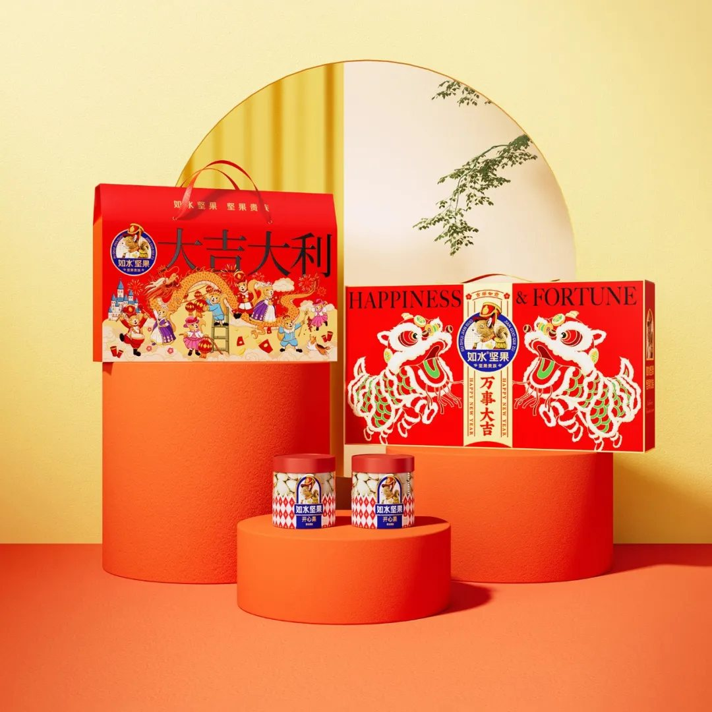

01 · 认知
先让包装承担高端品牌识别
坚果产品同质化时，包装不仅负责陈列，更要说明品牌的价值层级。项目统一品牌色彩、松鼠形象和信息秩序，让如水在礼赠和零售场景中更容易被识别。

02 · 产品
找到第二金角，扩展烘焙新市场
在原有坚果基础上，项目把坚果能力延伸到坚果酱夹心饼干。新产品不是随机增加SKU，而是沿着品牌已有资源寻找新的购买理由。

03 · 渠道
用礼品场景建立第二增长曲线
礼品渠道需要更完整的产品组合、包装表达和购买理由。项目将品牌资产延伸到礼盒，使产品从日常零食进入更高客单和更明确的送礼场景。

04 · 系统
让产品、包装和渠道相互带动
高端识别提高礼赠价值，新产品扩展消费场景，礼品渠道又放大品牌露出。三者共同形成比单点创新更稳固的增长结构。
